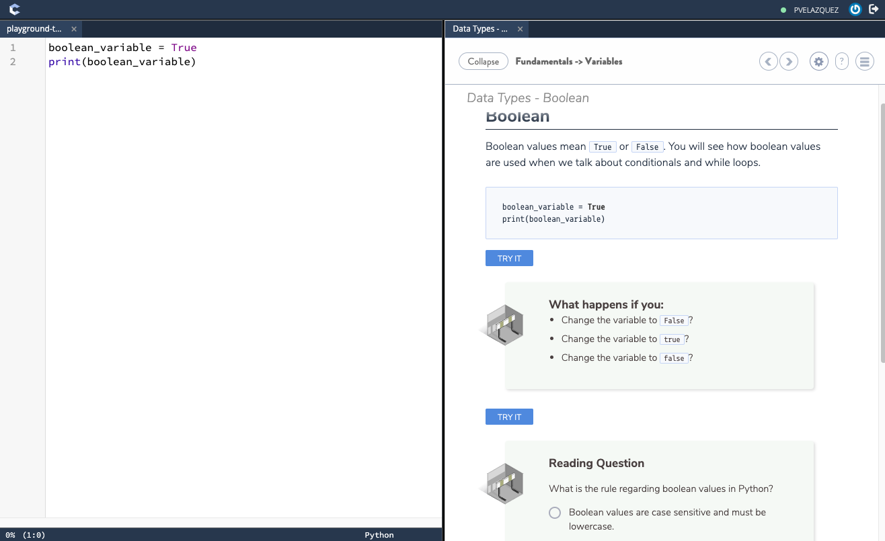

Learning Python using Codio
Codio was a great final experience for the class since it provided me with a built-in IDE for testing while I learned about the lecture. This lecture was an interactive way of learning since it allowed me the opportunity to test out the code.
Python is a general-purpose programming language commonly used for many projects since it's easy to learn and easy to work with. Python's structured and object-oriented approach is aimed to help programmers write better code for more straightforward understanding and results. In this program we learned the basics of Python, giving us an introduction on many ways we could use this language for. A few examples can be web scappring and automation.